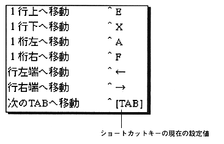
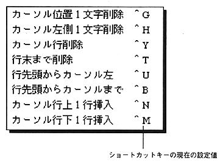

Return to previous page ｜ Return to menu ｜ Go to next page
-
Move cursor
- Cursor movement commands that operate on the active text window. These commands can also be operated with the keys set by the “Shortcut key setting” command in the “Edit” menu. The letters displayed at the back of the menu indicate the currently set shortcut keys.

-
Enter / Delete character
- Character input / deletion commands that operate on the active text window. These commands can also be operated with the keys set by the “Shortcut key setting” command in the “Edit” menu. The letters displayed at the back of the menu indicate the currently set shortcut keys.

Return to previous page ｜ Return to menu ｜ Go to next page